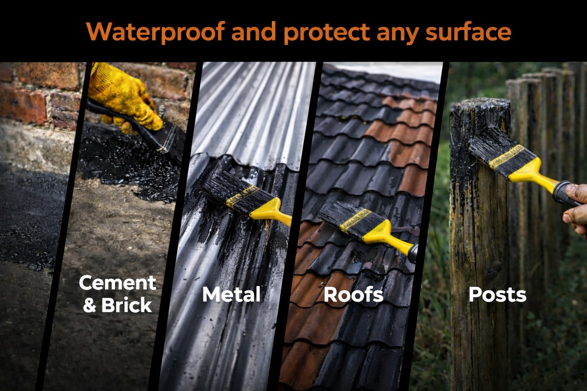

Waterproof & Protection for Roofs, Steel & More
Iscor Bitumen Black Paint is a durable tar-based coating used for sealing and waterproofing. Ideal for roofs, metal, fencing, foundations and general surface protection.
Common Uses
- Roof waterproofing
- Metal & steel protection
- Fencing & posts
- Concrete & foundations
- General surface sealing
Why Choose Us
- Durable tar-based coating
- Waterproof protection
- Rust prevention
- Available in 20L & 200L
- Nationwide delivery